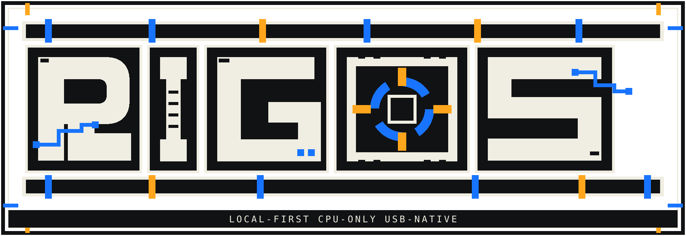

FIELD RECORD / FROZEN FUNCTIONAL MILESTONE
THE MACHINE OWNS ITS OWN STATE.
RIGOS is a Debian-based x86_64 USB compute appliance built for automatic, persistent and observable CPU mining. This archive records how it was designed, where physical testing broke it, what Alpha.25 proves, and what remains unproven.
WHY RIGOS EXISTS
RIGOS started from a simple refusal: the local machine should not require a vendor account, activation server, subscription, worker limit or remote owner before it can perform its job.
The project moved beyond observation-only tooling into a bootable USB appliance. The result is not a cloud dashboard with a miner attached. It is a local operating path: immutable root, separate durable state, explicit configuration revisions, direct systemd ownership and a small operator interface.
THE AUTHORITY CHAIN
BIOS / UEFI
|
v
immutable Debian root (A / B)
|
v
verified persistent state
|
v
committed config revision
|
v
validated runtime under /run/rigos
|
+--> huge-page authority
+--> network readiness gate
|
v
systemd-owned XMRig
|
v
rig / rigosctl / bounded health observer
Utility and recovery boot remain outside the normal mining path. Recovery mutation is explicit. The short rig command does not hide sudo and does not bypass state, configuration or runtime gates.
ARCHIVE INDEX
From the first USB appliance work through the tty1 firstboot defect, Alpha.22 repair, hardening passes and the frozen Alpha.25 milestone.
Boot modes, systemd ordering, persistent-state trust boundary, revision activation, runtime generation and operator surfaces.
Sanitized real-hardware status snapshots, observed doctor checks, huge-page readiness, accepted shares and the exact limits of that evidence.
The missing power-cycle, outage, compatibility and soak campaigns that prevent an honest stable or production-ready claim.
CURRENT TRUTH
| Physically booted | YES |
|---|---|
| Configured mining observed | YES |
| Persistent state and exact huge pages observed | YES |
| Broad hardware compatibility proven | NO |
| Long unattended production reliability proven | NO |
| Stable release declared | NO |
RIGOS Alpha.25 is usable as an experimental appliance. That is a narrower claim than “production ready,” and the archive keeps the distinction visible.